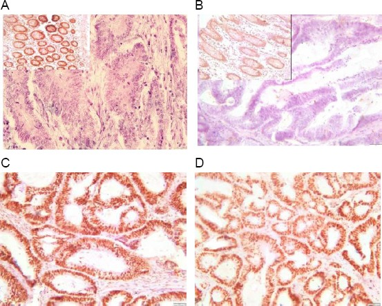
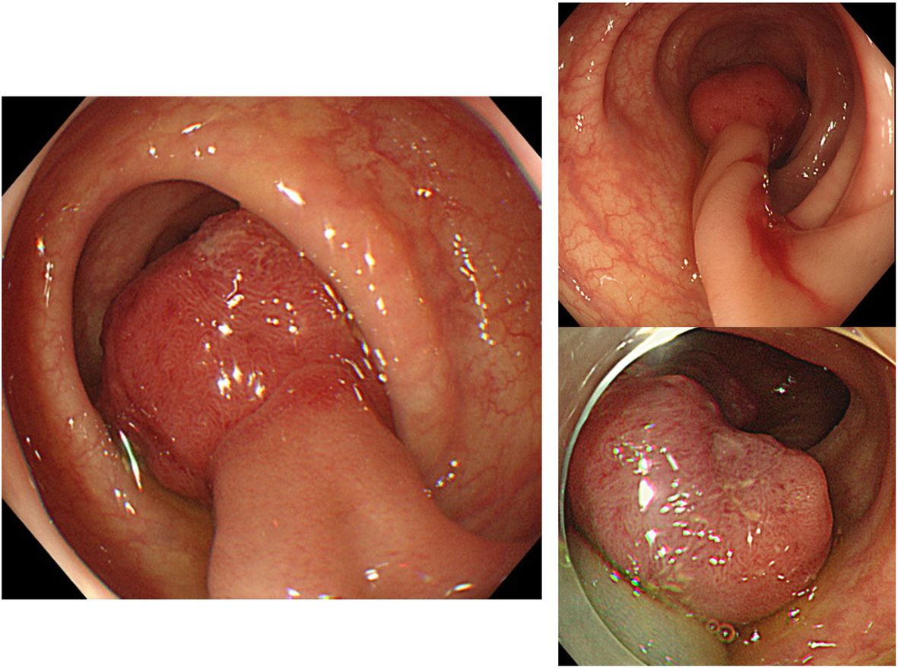
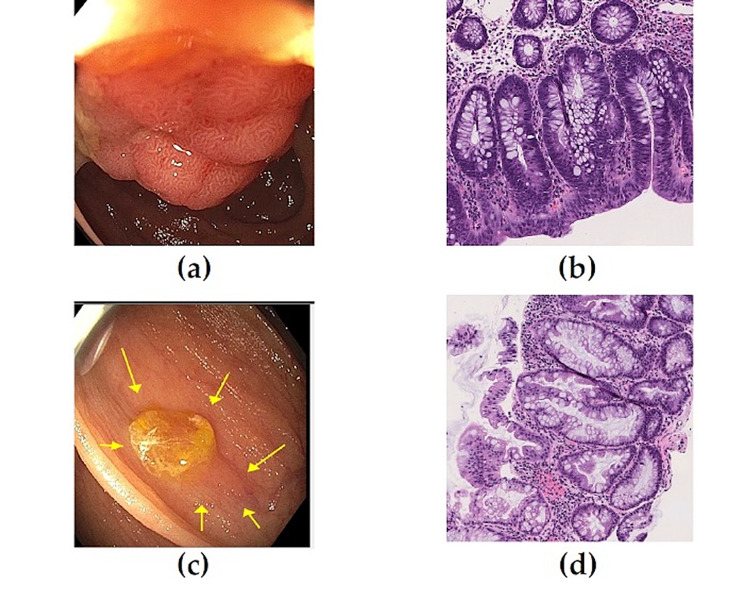
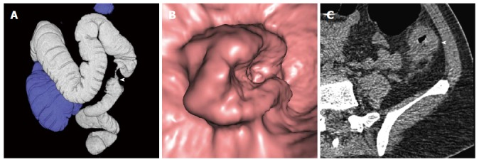

疾病 腸胃肝膽
CRC ｜ 大腸直腸癌 · Colorectal Cancer 筆記更新 2026-07-28· 整理狀態：可用
加入閱讀清單 其他名稱 4 CRC · Colorectal cancer · 大腸直腸癌 · 大腸癌
一句話總覽
絕大多數由腺瘤（adenoma）經約 10 年慢慢變成癌 ，因此它是少數「可以靠切息肉來預防」的癌症；兩條分子路徑（染色體不穩定 CIN 與 微衛星不穩定 MSI ）決定了它的位置、預後與能不能用免疫治療。臨床上最關鍵的一句：成人不明原因缺鐵性貧血，等於大腸鏡適應症 。
30 秒行動卡
診斷關鍵 ：排便習慣改變／血便／不明原因 Anemia → Colonoscopy↗ ＋ 切片治療骨架 ：局部 → 手術切除；淋巴結陽性（stage III）→ 術後輔助化療 ；直腸癌另加術前放化療＋全直腸繫膜切除（TME） ；轉移性 → 先驗 RAS／BRAF／MMR
絕對不可 ：拿 CEA 當篩檢工具 、成人缺鐵性貧血只補鐵不做大腸鏡、RAS 突變還給 anti-EGFR 、血便直接歸因痔瘡就結案
定義與定位
這個病是什麼？在分類樹的哪個位置？跟隔壁的病靠什麼分開？
項目
重點
本質
大腸與直腸黏膜的腺癌（adenocarcinoma） ，>95%；由癌前病變逐步累積突變而來
好發族群
年齡是權重最高的危險因子；台灣發生人數長年名列所有癌症前段，且 ＜50 歲的早發性 CRC 逐年上升
分類位置
大腸慢性病灶中的「腫瘤型」，與發炎型（IBD ）、感染型、缺血型並列
關鍵分軸
①部位 ：右側（近端）vs 左側（遠端／直腸）②分子 ：CIN vs MSI ③遺傳性 vs 散發性
腺瘤與癌的關係只能單向讀
「幾乎所有大腸癌來自腺瘤 」為真；「幾乎所有腺瘤會變成癌 」為假——只有約 5% （一說 5–10%）的腺瘤最終變癌。
50 歲以上族群約 30–40% 帶有腺瘤，但終生 CRC 風險僅約 5%。
臨床上仍一律切除所有偵測到的腺瘤 ，理由不是「都會變癌」，而是事先無法辨認哪一顆會變 。
病因與機制
為什麼會發生？兩條路徑分別走到哪裡？
flowchart TD
A["正常大腸黏膜"] --> B["APC 失活"]
A --> C["MMR 功能喪失"]
B --> D["管狀／絨毛狀腺瘤"]
D --> E["KRAS 活化<br/>腺瘤增大"]
E --> F["TP53 失活"]
F --> G["CIN 型腺癌<br/>約八成"]
C --> H["Lynch：胚系突變"]
C --> I["散發：MLH1 高甲基化<br/>鋸齒狀病變"]
H --> J["MSI-high 腺癌"]
I --> J
筆記中的流程與關係
對照項
CIN （chromosomal instability）MSI （microsatellite instability／dMMR）
占比
約 80–85% （＝以「非 MSI 即 CIN」切分；若把 CIMP／鋸齒狀路徑另列，CIN 約 65–70%）
約 15% （其中約 3% 為 Lynch、約 12% 為散發性）
機制
非整倍體、雜合性缺失；APC → KRAS → TP53 順序累積
錯配修復（mismatch repair）失效 → 微衛星序列長度不穩定
前驅病變
傳統管狀／絨毛狀腺瘤
無柄鋸齒狀病變（sessile serrated lesion, SSL） （散發性）；Lynch 走一般腺瘤但進展極快
好發部位
左側為主
右側（近端）為主
特徵標記
—
散發性常見 BRAF V600E ＋ MLH1 promoter 高甲基化 ；Lynch 不會 有 BRAF V600E
組織學
一般腺癌
分化差、黏液狀、腫瘤浸潤淋巴球多
MSI-high 的三件事一定綁在一起記
① 早期（stage II）同分期預後較好 ——突變負荷高、免疫浸潤旺盛。
② 對 5-FU 單藥輔助化療反應差 ，stage II dMMR 不建議單用 5-FU（有研究提示可能無益甚至有害）。
③ 轉移期對免疫檢查點抑制劑（ICI，如 pembrolizumab）反應極佳 ，已是 dMMR／MSI-H 轉移性 CRC 的第一線——但 MSI-H 比例隨分期下降：stage II 約 20%、stage III 約 12%、stage IV 僅約 4–5% ，實際能用 ICI 的轉移病人是少數。
這三點方向不同（好、壞、好），最容易被混成一句話。
BRAF V600E 是「排除 Lynch」的分流器
IHC 顯示 MLH1 缺失時：驗到 BRAF V600E 或 MLH1 高甲基化 → 傾向散發性 ；兩者皆無 → 續做胚系檢測找 Lynch syndrome↗ 。但要分清楚：BRAF V600E 在轉移性 CRC 是不良預後因子 ，與「MSI-H 預後好」不衝突，那是兩個不同的分層。

dMMR 大腸癌的 IHC 範例：A（MLH1）與 B（PMS2）腫瘤細胞核染色消失，但左上角非腫瘤腺體／間質細胞仍呈棕色，證明內部陽性對照有效；C（MSH2）與 D（MSH6）核染色保留。配對原則是 MLH1–PMS2、MSH2–MSH6；若上游 partner 缺失，常連帶失去下游 partner。Source: Mismatch Repair Proteins and Microsatellite Instability in Colorectal Carcinoma , Fig. 2。
癌前病變：哪些腺瘤該擔心
型態／特徵
癌變風險
備註
絨毛狀（villous） 最高 風險排序：villous > tubulovillous > tubular
大小 ≥1 cm 明顯上升
與「高度異型增生」「絨毛成分」合稱 advanced adenoma
高度異型增生（high-grade dysplasia） 明顯上升
尚未穿破黏膜肌層即非侵襲癌
無柄鋸齒狀病變（SSL） 上升，走 MSI 路徑
右側、扁平、界線不清、覆黏液易被漏看 ；是 interval cancer 的主因
增生性息肉（hyperplastic，小、左側）
幾乎不變
與 SSL 不同，勿混
危險因子與保護因子
類別
內容
權重最高（不可改變） 年齡 ；個人或家族的腺瘤／CRC 病史 （尤其一等親 ，親屬愈年輕、人數愈多風險愈高）
遺傳與慢性發炎
Lynch syndrome↗ 、FAP↗ 等明確遺傳症候群占全部 CRC 約 5% ；另有約 20–25% 有家族聚集但找不到已知致病基因（這兩個數字常被混成同一題）；長期 IBD （見下方監測段）
可改變（證據較強）
紅肉與加工肉 、動物脂肪、肥胖 、缺乏運動、飲酒 、吸菸 、糖尿病
保護因子
規律運動 證據最一致；膳食纖維、鈣 方向為正但效果較弱；aspirin 見下
Aspirin 的定位有爭議，別寫死
曾被視為化學預防手段，但 USPSTF 2022 已將 CRC 自 aspirin 建議中移除 ——理由是現有證據不足以證實低劑量 aspirin 可降低 CRC 發生率或死亡率 （出血風險與淨效益則是同一份文件下修 CVD 適應症的理由，兩者不要混講）。
例外 ：Lynch syndrome↗ 病人使用 aspirin 有較明確的預防證據（CAPP2），仍在指引中被提及。
篩檢
一般風險族群的篩檢邏輯是「用低侵襲性工具找出需要做大腸鏡的人」，而 Colonoscopy↗ 同時是診斷與治療（切息肉）工具
項目
內容
美國（USPSTF 2021、ACS）
一般風險族群起始年齡下修至 45 歲 （原 50 歲），理由正是早發性 CRC 上升
工具
糞便免疫化學法（FIT，Stool occult blood↗ ）每年 ；或 Colonoscopy↗ 每 10 年
一等親有 CRC
較一般族群提早開始、間隔縮短（常見做法：40 歲或比該親屬確診年齡早 10 年開始）
陽性後 一律做全大腸鏡 ，不可只重複驗糞便
台灣公費篩檢（數字逐年變動，以國健署最新公告為準）
衛福部國民健康署 自 114 年（2025）1 月起 擴大：由原本 50–74 歲，改為
45–74 歲 ：每 2 年 1 次定量免疫法糞便潛血檢查（FIT） 40–44 歲且一等親（父母、子女、兄弟姊妹）曾罹大腸癌者 ：同樣每 2 年 1 次
115 年（2026）大腸癌篩檢的對象與間隔維持不變 （未見調整公告）。
115 年新增 ：45–74 歲民眾終身 1 次 公費「糞便抗原檢測胃幽門螺旋桿菌 」，可與大腸癌 FIT 同一次採便 完成。
陽性後 ：建議 6 個月內 完成大腸鏡，逾期未做者罹癌風險顯著上升。
來源：國民健康署 · 大腸癌篩檢簡介 。此政策每年可能調整，臨床請以國健署最新公告為準。
早發性 CRC（early-onset，＜50 歲）：歐美與亞太**皆呈上升趨勢**
台灣全國癌症登記 1994–2018 的 age–period–cohort 分析顯示 30–49 歲組發生率年增約 3.6% 、死亡率年增約 1.0%，均高於年長族群（約 2.6%）；亞洲的早發性 CRC 傾向男性較多、直腸癌比例較高 。這是各國下修篩檢起始年齡的直接理由。
IBD 病人的監測（結論；完整內容見 IBD ）
決定要不要監測的是發炎範圍與病程長度，不是病名 ——UC 與侵犯大腸範圍夠廣的 Crohn's colitis 風險相當。
一般從確診後 8 年 （AGA 2021：8–10 年）開始監測性大腸鏡；合併 PSC 者自診斷當下開始、每年一次 。IBD 相關癌變常是扁平、界線不清 的，不像散發型 CRC 長成明顯息肉 → 用染色內視鏡＋目標式切片。
臨床表現
對照項
右側（近端）結腸 左側（遠端）結腸／直腸
解剖前提
管腔大 、糞便呈液狀
管腔窄 、糞便已成形
主要表現
隱匿性出血 → 缺鐵性 Anemia 、倦怠、可觸摸腫塊 、體重減輕阻塞症狀 、腹絞痛、大便變細 、便秘與腹瀉交替
出血型態
糞便潛血陽性，肉眼常看不出來
肉眼血便（hematochezia） 、糞便帶血絲
診斷時機
症狀晚出現，確診時常已較晚期
症狀早出現
分子傾向
MSI-high 比例較高
CIN 為主
典型 ：50 歲以上、排便習慣改變持續數週 ＋血便或糞便潛血陽性提示性 ：不明原因體重減輕、不明原因缺鐵性貧血、裡急後重（tenesmus，直腸病灶）少見但重要 ：以急性大腸阻塞或穿孔 為首發表現（左側常見）；Streptococcus gallolyticus（舊稱 S. bovis）菌血症或心內膜炎 → 必須找大腸腫瘤
→ 相關主訴流程：Anemia 、Abdominal pain↗
診斷與分期
步驟
內容
確診
Colonoscopy↗ ＋ 切片看完全大腸 找同時性（synchronous）病灶——約 2–5% （彙整約 3.5%）在大腸內有第二處同時性（synchronous）原發癌 。阻塞使內視鏡無法通過時，術後 3–6 個月內補做完整大腸鏡
分期影像
胸腹骨盆 CT （Chest CT↗ 含在內，肺為第二常見轉移處）；直腸癌加做骨盆 MRI ±經直腸超音波 評估 T／N 與環周切緣（CRM）
血液
術前 CEA 基線值（作為術後追蹤基準，不是診斷或篩檢工具 ）
病理
淋巴結至少檢視 12 顆 才算充分分期；分化程度、脈管／神經侵犯
分子檢測
MMR／MSI （所有 CRC 都建議做，兼作 Lynch 篩檢）；轉移性另加 RAS（KRAS／NRAS）、BRAF V600E、HER2
分期怎麼決定治療（不必背完整 TNM 逐條）
T 看侵犯深度 （黏膜下層 → 固有肌層 → 穿出漿膜 → 侵犯鄰近器官）、N 看淋巴結顆數 、M 看遠端轉移 。Stage I ：手術即可。Stage II（N0 但穿出腸壁） ：一般觀察；有高風險特徵（T4、穿孔、阻塞、淋巴結取樣不足、分化差、脈管侵犯）才考慮輔助化療；dMMR 者不用 5-FU 單藥 。Stage III（淋巴結陽性）→ 術後輔助化療 （FOLFOX／CAPOX 類），這是最穩定的一條規則。Stage IV ：全身治療為主；肝、肺寡轉移可考慮切除，仍有治癒機會 。
有柄（Ip）病灶：柄部清楚
Tubular adenoma vs SSL
Apple-core 狹窄



左圖示範典型 pedunculated morphology（本病例病理為帶 adenoma component 的早期癌，重點在可辨識的 stalk）。中圖 A 為向腔內突出的 tubular adenoma；C 為扁平、邊界不清且覆 mucus cap 的 sessile serrated lesion。右圖為降結腸 T3 stenosing cancer：3D 外觀呈 apple-core deformity，病灶侵犯超過半圈並有結節狀外緣。Sources: Kondo et al., 2021 , Fig. 1（CC BY 4.0）；Colorectal Cancer Screening and Surveillance , Fig. 1；Preoperative CT colonography in CRC , Fig. 4。
鑑別診斷
要排除的
支持它的線索
怎麼排除
Hemorrhoids↗ 鮮紅血覆在糞便表面、排便時疼痛、肛診可及
痔瘡的存在不能解釋一切 ——仍須完成大腸評估
IBD 較年輕、慢性腹瀉合併黏液血便、腸道外表現
大腸鏡型態＋切片；長病程 IBD 本身也會長癌
憩室疾病（diverticular disease）
左下腹痛、突發大量出血
CT ＋大腸鏡（急性發炎期避開）
感染性大腸炎
急性起病、Fever 、旅遊或抗生素史
糞便培養、C. difficile 檢驗
大腸缺血（ischemic colitis）
年長、突發腹痛後血便、分水嶺區
CT ＋大腸鏡；病程自限
治療
情境
處置
結腸癌 局部節段性切除＋區域淋巴結廓清 ；不常規做放療
直腸癌 （中低位、T3–4 或 N+）術前放化療或全新輔助治療（TNT）→ 全直腸繫膜切除（TME） ；見 Radiotherapy↗
淋巴結陽性
術後輔助化療 （oxaliplatin 為基礎的組合）；急性阻塞先減壓（支架橋接或造口）再根治手術
轉移性：RAS／BRAF 野生型且左側
化療 ＋ anti-EGFR （cetuximab／panitumumab）
轉移性：RAS 突變
不可用 anti-EGFR ；改用化療 ＋ anti-VEGF （bevacizumab）
轉移性：BRAF V600E
encorafenib ＋ cetuximab（±binimetinib）；預後較差
轉移性：dMMR／MSI-H
免疫檢查點抑制劑（pembrolizumab）為第一線
肝／肺寡轉移
積極評估轉移切除或局部治療 ，可達長期存活
併發症與預後
要盯的併發症 ：大腸阻塞、穿孔與腹膜炎（可致 Shock ）、慢性失血造成 Anemia 、肝轉移 （門靜脈回流，最常見）與肺轉移 預後因子 ：分期是最重要的 ；其次為淋巴結取樣數、脈管／神經侵犯、切緣（直腸癌看 CRM）、術前 CEA 偏高、腸阻塞或穿孔表現。分子上：早期 MSI-H 較好 、BRAF V600E 在轉移期較差 術後追蹤 ：CEA 定期追蹤＋影像；確診後 1 年做大腸鏡 找異時性（metachronous）病灶，之後依結果延長間隔
CEA 的正確位置
不是篩檢工具 （敏感度與特異度都不足；吸菸、肝病、胰臟炎、其他癌症都可能升高）。
正確用途只有三個：術前基線與預後評估、術後追蹤復發、轉移期評估治療反應 。術後 CEA 由降轉升，即使影像還乾淨也要積極找復發。
遺傳性大腸癌
對照項
Lynch syndrome↗ FAP↗
基因
MLH1、MSH2、MSH6、PMS2、EPCAM （MMR 系統）APC （約 25% 為新生突變）
遺傳
體染色體顯性
體染色體顯性
息肉
息肉數不多 ，但單顆進展快上百至上千顆 腺瘤，青春期即出現
癌變
終生風險高但非必然
幾乎必然癌變 （未治療者多在 40 多歲前發生）
部位
右側好發 全大腸
年齡
發病早 （常 40–50 歲前）更早
多發性
同時性／異時性多原發癌明顯較多 —
腸外腫瘤
子宮內膜癌 （整體第二常見；但對女性 而言終生風險與 CRC 相當或更高，且約半數女性 Lynch 是以子宮內膜癌為第一個癌症 被診斷）、卵巢、胃、小腸、泌尿道、膽道十二指腸／壺腹腺瘤、甲狀腺癌、硬纖維瘤（desmoid）、骨瘤、CHRPE
監測／處置
MLH1／MSH2（含 EPCAM）約 20–25 歲起、MSH6／PMS2 約 30–35 歲起，每 1–2 年大腸鏡 （若家族最年輕確診者 <25 歲，提早 2–5 年開始）；女性加子宮內膜監測；手術常考慮擴大切除預防性大腸切除 ；術後仍需追蹤剩餘直腸與上消化道
Lynch 的預後不差，問題在「早、多、再發」
同分期比較下，Lynch 的 CRC 預後優於 散發性——因為腫瘤是 MSI-H／dMMR。
真正的臨床負擔是發病年齡早、容易多發、容易出現異時性第二原發癌 ，所以策略是更早、更密集的監測與更大的切除範圍。
篩選工具：Amsterdam II 準則、revised Bethesda 準則，現多改為全面 MMR IHC／MSI 檢測 再往上追。
禁忌與陷阱
絕對不可
情境
絕對不可
為什麼
該做什麼
無症狀者要篩檢 CRC
用 CEA 當篩檢工具
敏感度與特異度皆不足；早期常不升、良性疾病常假陽性
用 Stool occult blood↗ （FIT）或 Colonoscopy↗
成人不明原因缺鐵性貧血
只補鐵、不做大腸鏡
右側大腸癌以隱匿失血表現，補鐵會讓數值好轉而掩蓋病灶
男性與停經後女性一律完成上下消化道評估 （見 Anemia ）
轉移性 CRC 帶 RAS（KRAS／NRAS）突變
給 anti-EGFR （cetuximab／panitumumab）
訊號在 EGFR 下游 已持續活化，阻斷上游無效
治療前先驗 RAS／BRAF／MMR ；RAS 突變改用 anti-VEGF 為基礎的組合
病人主訴血便且有痔瘡
直接歸因痔瘡就結案
痔瘡極常見，它的存在不能排除同時有腫瘤
依年齡與危險因子完成 Colonoscopy↗
糞便潛血陽性
只重複驗一次糞便、或只做乙狀結腸鏡
病灶可能在近端；重驗陰性不代表沒事
一律安排全大腸鏡
常見錯誤
把「幾乎所有大腸癌來自腺瘤」反推成「幾乎所有腺瘤會變癌 」——後者錯，實際只約 5%。切除的理由是無法事先辨認。
以為 Lynch syndrome 預後比散發性差 ——方向相反，同分期是較好 。
把 MSI-H「預後好」直接套到治療 ——它同時代表 5-FU 單藥輔助化療無效 ，兩件事不可互推。
把 BRAF V600E 當成 Lynch 的證據 ——正好相反，它支持散發性 MLH1 高甲基化。
把增生性息肉與**無柄鋸齒狀病變（SSL）**混為一談——後者走 MSI 路徑、會變癌且容易漏看。
直腸癌比照結腸癌只開刀不放療——中低位直腸癌需術前放化療＋TME 。
以為年輕人不會得 CRC——＜50 歲發生率正在上升 ，年輕病人的血便同樣要查。
相關連結
IBD — 長期黏膜發炎的癌變風險與監測時機（完整內容在該篇）Colonoscopy↗ — 診斷、篩檢與治療（息肉切除）三合一的核心工具Stool occult blood↗ — 台灣公費篩檢主力（FIT）；陽性一律接大腸鏡Lynch syndrome↗ 、FAP↗ — 兩大遺傳性大腸癌；前者早發多發、後者上百顆息肉幾乎必然癌變Anemia — 成人不明原因缺鐵性貧血是最重要的間接線索Pancreatic cancer — 另一個以「症狀晚出現、確診多已晚期」為特徵的消化道癌禁忌選項 — 本篇的四條絕對不可已收錄